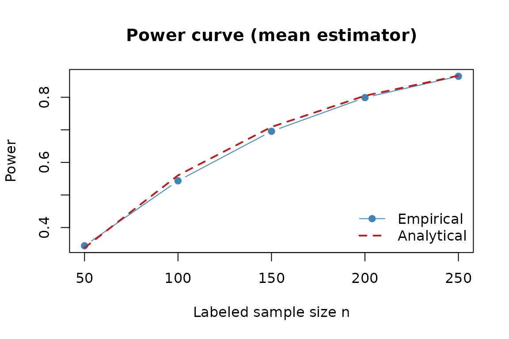

Prediction-Powered Power Planning
intro-ppi.RmdOverview
pppower provides analytical and Monte Carlo tools for
prediction-powered inference (PPI). We cover two main
workflows:
- Prediction-powered mean estimator - the target parameter is the population mean \(\theta = \mathbb{E}[Y]\) corrected via predictions \(f(X)\).
- Prediction-powered linear regression (PPI-OLS) - the estimand is a linear contrast \(c^\top \beta\) from a PPI-adjusted OLS estimator.
Both workflows rely on a synthetic “superpopulation” that mimics the
joint distribution of \((X, Y)\) and
their cross-fitted predictions. The helper
simulate_crossfit_data() generates such a data set.
library(pppower)
set.seed(123)
df <- pppower:::simulate_crossfit_data(
n = 4000,
p = 5,
family = gaussian(),
K = 5
)
str(df)
#> 'data.frame': 4000 obs. of 7 variables:
#> $ y : num 3.77e-05 -1.15 -5.91e-01 -3.92 -4.25 ...
#> $ x1 : num -0.626 0.184 -0.836 1.595 0.33 ...
#> $ x2 : num -1.135 0.765 0.571 -1.352 -2.03 ...
#> $ x3 : num 0.264 -0.829 -1.462 1.684 -1.544 ...
#> $ x4 : num -0.9391 1.3937 1.6258 0.409 -0.0926 ...
#> $ x5 : num 0.858 -1.625 -0.234 -1.033 -1.141 ...
#> $ fhat_cf: num -0.5424 -1.5751 0.7831 0.0229 -6.387 ...
#> - attr(*, "family")= chr "gaussian"
#> - attr(*, "K")= num 51. Prediction-Powered Mean Estimation
Notation
We test \(H_0: \theta = \theta_0\) versus a two-sided alternative, with:
- \(\delta = \theta - \theta_0\) - effect size of interest.
- \(N\) - unlabeled sample size used to evaluate predictions \(f(X)\).
- \(n\) - labeled sample size used to correct prediction error.
- \(\sigma_f^2 = \mathrm{Var}(f(X))\) and \(\sigma_{\text{res}}^2 = \mathrm{Var}(Y - f(X))\).
These can be estimated from the superpopulation.
Analytical power
power_ppi_mean() implements the normal-theory power
formula, using the standard error \(\sqrt{\sigma_f^2 / N + \sigma_{\text{res}}^2 /
n}\).
power_ppi_mean(delta, var_f, var_res, N, n, alpha)
#> [1] 0.804664Monte Carlo calibration (parametric)
simulate_power() mimics the null distribution with Monte
Carlo samples of the test statistic.
simulate_power(delta, var_f, var_res, N, n, alpha, R = sim)
#> Exact Empirical
#> 0.804664 0.818500Monte Carlo calibration (resampling superpopulation)
pppower:::simulate_power_ppi_mean() repeatedly resamples
labeled/unlabeled splits from the synthetic population, recomputing the
PPI estimator each time.
mc_pp <- pppower:::simulate_power_ppi_mean(
df = df,
N = N,
n = n,
alpha = alpha,
R = sim,
theta0 = theta0,
seed = 2024
)
mc_pp$empirical_power
#> [1] 0.823
mc_pp$analytical_power
#> [1] 0.804664Sample-size planning
n_required_PP() solves for the labeled sample size that
meets a power target.
n_required_PP(
delta = delta,
N = N,
alpha = alpha,
power = 0.80,
type = "mean",
var_f = var_f,
var_res = var_res
)
#> [1] 197Power and Type I error curves
power_curve_mean() sweeps over candidate labeled sample
sizes, while plot_type1_error_curve() draws empirical
vs. analytical rejection probabilities.
curve_fixed <- pppower:::power_curve_mean(
n_grid = seq(50, 250, by = 50),
delta = delta,
N = N,
var_f = var_f,
var_res = var_res,
alpha = alpha,
R = sim
)
curve_fixed
#> n power_empirical power_exact delta N alpha var_f var_res
#> 1 50 0.3440 0.3377963 0.45 2000 0.05 11.12185 3.986545
#> 2 100 0.5435 0.5601844 0.45 2000 0.05 11.12185 3.986545
#> 3 150 0.6955 0.7089162 0.45 2000 0.05 11.12185 3.986545
#> 4 200 0.7990 0.8046640 0.45 2000 0.05 11.12185 3.986545
#> 5 250 0.8645 0.8661780 0.45 2000 0.05 11.12185 3.986545
plot(
curve_fixed$n,
curve_fixed$power_empirical,
type = "b",
pch = 19,
col = "steelblue",
xlab = "Labeled sample size n",
ylab = "Power",
main = "Power curve (mean estimator)"
)
lines(curve_fixed$n, curve_fixed$power_exact, col = "firebrick", lwd = 2, lty = 2)
legend("bottomright", legend = c("Empirical", "Analytical"),
col = c("steelblue", "firebrick"), lty = c(1, 2), pch = c(19, NA), lwd = c(1, 2), bty = "n")
To study Type I error and power as a function of \(\delta\), use
type1_error_curve_mean() or, for a fully simulated DGP,
type1_error_curve_mean_dgp():
effect_grid <- seq(-0.3, 0.3, by = 0.05)
curve_dgp <- pppower:::type1_error_curve_mean_dgp(
effect_grid = effect_grid,
N = N,
n = n,
family = gaussian(),
superpop_n = 20000,
p = 5,
K = 5,
alpha = alpha,
R = sim
)
curve_dgp
#> effect_size type1_empirical type1_exact theta theta0 N n
#> 1 -3.000000e-01 0.4885 0.46606231 0.0106956 0.3106956 2000 200
#> 2 -2.500000e-01 0.3475 0.34561418 0.0106956 0.2606956 2000 200
#> 3 -2.000000e-01 0.2380 0.23945185 0.0106956 0.2106956 2000 200
#> 4 -1.500000e-01 0.1530 0.15511942 0.0106956 0.1606956 2000 200
#> 5 -1.000000e-01 0.0945 0.09579527 0.0106956 0.1106956 2000 200
#> 6 -5.000000e-02 0.0620 0.06125618 0.0106956 0.0606956 2000 200
#> 7 5.551115e-17 0.0435 0.05000000 0.0106956 0.0106956 2000 200
#> 8 5.000000e-02 0.0620 0.06125618 0.0106956 -0.0393044 2000 200
#> 9 1.000000e-01 0.0935 0.09579527 0.0106956 -0.0893044 2000 200
#> 10 1.500000e-01 0.1400 0.15511942 0.0106956 -0.1393044 2000 200
#> 11 2.000000e-01 0.2240 0.23945185 0.0106956 -0.1893044 2000 200
#> 12 2.500000e-01 0.3275 0.34561418 0.0106956 -0.2393044 2000 200
#> 13 3.000000e-01 0.4540 0.46606231 0.0106956 -0.2893044 2000 200
#> alpha var_f var_res family
#> 1 0.05 11.4367 3.97833 gaussian
#> 2 0.05 11.4367 3.97833 gaussian
#> 3 0.05 11.4367 3.97833 gaussian
#> 4 0.05 11.4367 3.97833 gaussian
#> 5 0.05 11.4367 3.97833 gaussian
#> 6 0.05 11.4367 3.97833 gaussian
#> 7 0.05 11.4367 3.97833 gaussian
#> 8 0.05 11.4367 3.97833 gaussian
#> 9 0.05 11.4367 3.97833 gaussian
#> 10 0.05 11.4367 3.97833 gaussian
#> 11 0.05 11.4367 3.97833 gaussian
#> 12 0.05 11.4367 3.97833 gaussian
#> 13 0.05 11.4367 3.97833 gaussian
pppower:::plot_type1_error_curve(
curve_dgp,
main = "Type I error / power (DGP)"
)
2. Prediction-Powered OLS (PPI-OLS)
Notation
Let \(\beta\) be the PPI-adjusted coefficient vector and \(c\) the contrast of interest.
- Estimand: \(c^\top \beta\).
- Variance: \(c^\top (V_u / N + V_l / n)
c\), where
V_u/V_lare per-observation sandwich covariances for the unlabeled (imputation) and labeled (rectifier) regressions.
Fit the model
fit_ols <- ppi_ols_fit(
y = "y",
f_col = "fhat_cf",
formula = ~ x1 + x2 + x3 + x4 + x5,
data_l = df[1:n, ],
data_u = df[(n + 1):(n + N), ]
)
summary(fit_ols)
#> Estimate Std.Error z Pr...z..
#> (Intercept) 0.2465679 0.1320109 1.867785 6.179205e-02
#> x1 0.3880673 0.1360690 2.851988 4.344669e-03
#> x2 1.0040357 0.1439246 6.976123 3.034381e-12
#> x3 1.4069561 0.1528926 9.202254 3.505197e-20
#> x4 1.8425736 0.1180420 15.609470 6.275586e-55
#> x5 2.4614622 0.1257295 19.577442 2.408146e-85
pieces <- fit_ols$piecessummary() reports coefficient, standard error, and
z-statistic. The pieces list exposes V_u,
V_l, n, and N for power
formulas.
Construct a contrast
Suppose we focus on x1:
coef_names <- colnames(pieces$V_u)
c_vec <- numeric(length(coef_names))
names(c_vec) <- coef_names
c_vec["x1"] <- 1
delta_ols <- sum(c_vec * fit_ols$coef)
delta_ols
#> [1] 0.3880673ppi_ols_wald() provides the Wald test summary:
wald_x1 <- pppower:::ppi_ols_wald(fit_ols, A = matrix(c_vec, nrow = 1))
wald_x1
#> $estimate
#> [1] 0.3880673
#>
#> $se
#> [1] 0.136069
#>
#> $z
#> [1] 2.851988
#>
#> $p.value
#> [1] 0.004344669Analytical power
power_ppi_ols(
delta = delta_ols,
V_u = pieces$V_u,
V_l = pieces$V_l,
N = pieces$N,
n = pieces$n,
c = c_vec,
alpha = alpha
)
#> [1] 0.8138108Monte Carlo calibration
simulate_power_ppi_ols() resamples from the
superpopulation and recomputes the PPI-OLS estimator. Align the null
value so the effect size matches the analytic call.
theta0 <- sum(c_vec * fit_ols$coef) - delta_ols
pppower:::simulate_power_ppi_ols(
df = df,
formula = ~ x1 + x2 + x3 + x4 + x5,
N = pieces$N,
n = pieces$n,
c = c_vec,
theta0 = theta0,
alpha = alpha,
R = sim,
seed = 4321
)$analytical_power
#> [1] 0.5677708
pppower:::simulate_power_ppi_ols(
df = df,
formula = ~ x1 + x2 + x3 + x4 + x5,
N = pieces$N,
n = pieces$n,
c = c_vec,
theta0 = theta0,
alpha = alpha,
R = sim,
seed = 4321
)$empirical_power
#> [1] 0.564Sample-size solver
n_required_PP(
delta = delta_ols,
N = pieces$N,
alpha = alpha,
power = 0.80,
type = "ols",
V_u = pieces$V_u,
V_l = pieces$V_l,
c = c_vec
)
#> [1] 193Summary Table
| Task | Functions |
|---|---|
| Generate cross-fitted superpopulation | simulate_crossfit_data() |
| Mean estimator power & calibration |
power_ppi_mean(), simulate_power(),
pppower:::simulate_power_ppi_mean()
|
| Mean estimator sample size | n_required_PP(type = "mean", ...) |
| Mean estimator curves |
power_curve_mean(),
type1_error_curve_mean[_dgp](),
plot_type1_error_curve()
|
| Fit prediction-powered OLS |
ppi_ols_fit(), summary()
|
| OLS contrasts and power |
pppower:::ppi_ols_wald(), power_ppi_ols(),
pppower:::simulate_power_ppi_ols()
|
| OLS sample size | n_required_PP(type = "ols", ...) |
Together these tools help you explore prediction quality, diagnose finite-sample effects, and plan labeled sample sizes for both mean and regression targets.